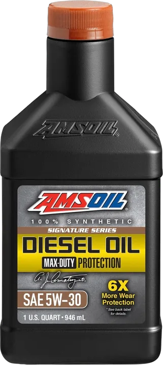

Signature Series Max-Duty • 5W-30
AMSOIL Signature Series Max-Duty 5W-30 100% Synthetic Diesel Oil
La máxima tecnología de AMSOIL en lubricación diésel de servicio pesado. Ofrece 6 veces más protección contra el desgaste del motor que el estándar Detroit Diesel DD13.